Игровые движки: игры, интерактивные миры и инсталляции
В игре дверь может быть препятствием, наградой, загадкой или способом рассказать историю. На вид это один и тот же объект. Разница появляется в правилах: кто может её открыть, что нужно сделать перед этим, слышен ли звук с другой стороны и изменится ли мир после прохода. Игровой движок позволяет собрать изображение, пространство, действия и правила в одну работающую систему.
На этой основе создают платформеры, приключения, головоломки, гонки, стратегии, визуальные новеллы и сетевые миры. Те же инструменты используют для симуляторов, виртуальных выставок, VR и экранных инсталляций. Чтобы понять их возможности, начнём с игр: именно здесь особенно хорошо видно, как среда отвечает на действия человека.
Что делает игровой движок
Игровой движок объединяет системы, необходимые для работы интерактивного приложения: отображение графики, звук, ввод, сцены, анимацию, физику и выполнение игровой логики. В комплекте обычно есть редактор: в нём собирают уровни, размещают объекты, настраивают их свойства и запускают проект. Само приложение после сборки работает без открытого редактора.
Представьте комнату, где персонаж должен найти ключ и открыть дверь. Художник создаёт комнату и предметы, геймдизайнер придумывает условие, разработчик связывает события. Движок загружает ресурсы, показывает пространство, отслеживает нажатия и столкновения, воспроизводит звук и выполняет заданное правило. Смысл ключа и двери при этом определяется проектом: движок не знает, что найденный предмет должен разрешать проход, пока мы не опишем эту связь.
Этот процесс повторяется, пока работает приложение. Игрок видит результат и принимает следующее решение. Схема упрощена: разные подсистемы могут обновляться с разной частотой, а порядок вычислений зависит от движка и проекта. Важно, что следующий кадр связан с текущим состоянием мира и поступившими событиями.
Рендеринг в реальном времени означает, что изображение рассчитывается во время работы программы. Камера может повернуться туда, куда автор заранее не планировал смотреть, а объект может оказаться в новом положении. При 60 кадрах в секунду на подготовку кадра приходится примерно 16,7 миллисекунды. В этот бюджет нужно уложить работу процессора и видеокарты с учётом их параллельной работы. Превышение бюджета проявляется в падении частоты кадров или рывках.
Внутри проекта работают разные системы. Рендерер отвечает за видимую картинку, анимационная система меняет позы и параметры, физика рассчитывает взаимодействие тел, аудиосистема воспроизводит и размещает звуки. Игровая логика решает, что всё это означает: получен ли урон, завершён ли диалог, можно ли перейти в следующую область. Именно связи между системами превращают набор ресурсов в игру.
Управление может быть очень разным. В платформере человек постоянно корректирует движение. В пошаговой стратегии мир ждёт решения. В детективе основное действие происходит в интерфейсе, а в симуляторе можно долго наблюдать за системой. Игровой движок подходит и для двухмерной графики: сложность правил не зависит от наличия объёмных моделей.
Чем движок отличается от других сред
Многие программы умеют работать с камерой, временем, звуком и трёхмерными объектами. Различается то, вокруг какой задачи организована работа. В движке мы постоянно возвращаемся к вопросу: что произойдёт, если пользователь сделает это в таком состоянии мира?
| Среда | Вокруг чего строится работа | Как она связана с игровым проектом |
|---|---|---|
| After Effects | Композиция, слои и изменение параметров во времени. | Подготовка роликов, заставок, анимированной графики и отдельных текстур. Готовое видео воспроизводится по заданной временной последовательности. |
| Blender | Модели, материалы, сцены, анимация и процедурное создание ресурсов. | Изготовление объектов и анимаций для игры. После импорта движок связывает ресурсы с управлением, коллизиями и правилами. |
| TouchDesigner | Потоки изображения, звука, данных и взаимодействие между операторами. | Удобен для перформанса, датчиков и генеративной графики. Игровые правила тоже возможны, но системы персонажей, уровней и сохранений обычно нужно организовать самостоятельно. |
| Веб-среды | Страница или приложение, доступные через браузер; документы, интерфейсы, графика и сетевые сервисы. | В браузере тоже создают полноценные игры и подключают физику. Различается набор готовых инструментов и способ доставки. Веб и игровой движок могут работать вместе. |
| Игровой движок | Объекты мира, их состояние, поведение и ответ на действия пользователя. | Сборка игрового процесса, уровней, интерфейса, физики, звука и приложения под выбранное устройство. |
Границы пересекаются. В движке можно сделать линейный ролик, в TouchDesigner написать сложную логику, а в браузере запустить трёхмерный мир. Выбор зависит от того, какую часть работы среда помогает организовать. Для комнатной игры с персонажем, инвентарём и сохранением сцены движок даёт удобную основу. Для живого видеомикширования удобнее среда, в которой этот процесс уже является центральным.
У игрового движка есть ещё одна важная роль: он связывает работу команды. Модель, звуковой файл, реплика персонажа и правило появления противника становятся ресурсами одного проекта. Поэтому нужно понимать не только эффектные возможности рендера, но и организацию файлов, объектов, данных и сборки.
Правила, состояния и игровой цикл
Сценарий игры включает не только события истории. Нужно описать действия и условия: где игрок может пройти, что считается успехом, когда появляется опасность, что сохраняется после ошибки. Формулировка «персонаж находит ключ» становится системой: предмет доступен для взаимодействия, действие добавляет ключ в инвентарь, объект исчезает из комнаты, интерфейс подтверждает находку, дверь проверяет наличие ключа.
Состояние хранит то, что сейчас верно: запас здоровья равен трём, дверь закрыта, ключ найден, разговор завершён. Событие сообщает о произошедшем: нажата кнопка, персонаж вошёл в область, закончилась анимация. Условие проверяет возможность действия, а действие меняет мир. Эта последовательность пригодится и в игре, и в интерактивной выставке.
Если ключа нет, тоже нужен результат: короткий звук, реплика или понятный знак. Если дверь уже открыта, повторное нажатие не должно снова выдавать награду. Эти случаи легко пропустить, когда автор проверяет только успешное прохождение.
Машина состояний помогает описать поведение, которое меняется по правилам. Персонаж может стоять, бежать, прыгать, получать урон. Противник может патрулировать, заметить игрока, преследовать его и вернуться к поиску. В каждом состоянии разрешены свои действия, а переходы имеют условия.
Не нашёл за заданное время → патрулирует
Навигация и принятие решения решают разные задачи. Система поиска пути помогает найти маршрут вокруг препятствия. Правило поведения определяет, зачем по этому маршруту идти. Для такого противника не обязательно использовать нейросеть: таймер, проверка расстояния, линия видимости и несколько состояний уже дают осмысленное поведение. Это один из видов игрового ИИ.
Игровой цикл можно понимать и как повторяющуюся деятельность игрока. В исследовательской игре это наблюдение, гипотеза, проверка и новое знание. В игре на выживание это поиск ресурсов, подготовка, опасность и восстановление. Важно, почему человек хочет повторить цикл: получает новую возможность, лучше понимает мир, осваивает управление или принимает более сложные решения.
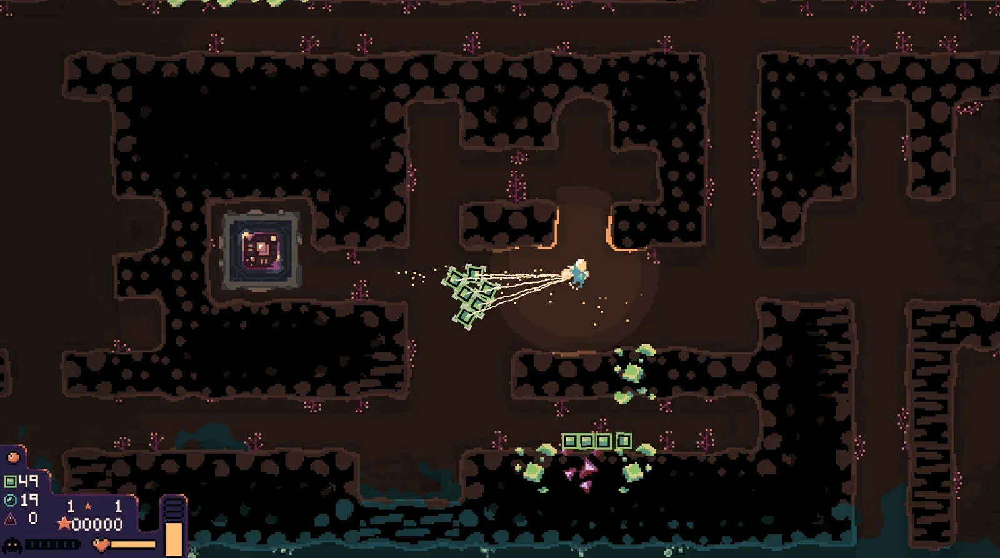
Dome Keeper, Bippinbits, Godot. Добыча ресурсов под землёй чередуется с защитой купола. Чем глубже исследование, тем больше времени нужно на возвращение. Знакомые действия получают смысл через общий таймер и угрозу. Это наглядный пример того, как несколько простых систем создают напряжённый выбор. Игра представлена в официальной подборке Godot.
Для обсуждения полезно мысленно изменить одно правило: что произойдёт, если убрать ограничение времени или позволить защищать купол из любой точки? Картинка может остаться прежней, но характер решений изменится. Так мы отделяем оформление от устройства игрового опыта.
Физика, столкновения и управление
У объекта есть видимая форма и форма, участвующая в расчёте столкновений. Красивый камень может состоять из тысяч полигонов, а его коллайдер быть простой оболочкой. Для персонажа часто используют капсулу: её округлая форма меньше цепляется за небольшие неровности. Без коллайдера изображение стены само по себе не запрещает пройти насквозь.
| Понятие | Что делает | Пример |
|---|---|---|
| Статическое препятствие | Участвует в столкновениях, но не должно постоянно перемещаться физической симуляцией. | Стена, пол, неподвижная скала. |
| Динамическое тело | Движется под действием симуляции: силы, гравитации, ударов и ограничений. | Ящик, который можно столкнуть с платформы. |
| Кинематическое управление | Движение задаёт программа. Конкретный способ обработки препятствий зависит от типа тела и движка. | Подвижная платформа или управляемый персонаж. |
| Триггер / область | Сообщает о пересечении или присутствии объекта, не обязательно останавливая его. | Зона контрольной точки, область диалога, датчик автоматической двери. |
| Лучевой запрос, raycast | Проверяет, что находится вдоль заданного направления. | Какой предмет перед камерой; есть ли препятствие между врагом и игроком. |
Столкновение и триггер решают разные задачи. Закрытая дверь должна физически удерживать персонажа. Область перед дверью может только сообщать, что кто-то приблизился. В Unity такой датчик можно настроить через Collider с Is Trigger, в Unreal через компонент с событиями overlap, в Godot через Area2D или Area3D. После получения события отдельно выполняется игровое правило.
У физики есть слои и маски взаимодействия. Например, пули должны проверять стены и противников, но игнорировать декоративную пыль. Это помогает задать правильное поведение и избежать лишних проверок. В двухмерных и трёхмерных проектах применяются соответствующие физические системы: нельзя ожидать, что 2D-коллайдер автоматически взаимодействует с 3D-телом.
Физика обычно обновляется с заданным шагом, а изображение может рисоваться с другой частотой. Перемещение и скорость нужно связывать со временем, а не с количеством отрисованных кадров. Иначе на быстром компьютере персонаж будет двигаться быстрее. Для динамических тел используют предусмотренные движком методы и этапы обновления, а не произвольно меняют координаты каждый кадр.
Физическая правдоподобность и удобство управления не всегда совпадают. В платформере прыжок часто специально настраивают: меняют скорость падения, сохраняют короткий запас времени для прыжка после края платформы и запоминают нажатие немного раньше приземления. Эти приёмы называют coyote time и jump buffering. Они помогают игре учитывать намерение человека. Движок предоставляет инструменты, а характер управления создаёт автор.
Полезно разделять ввод, движение и изображение. Команда «идти вперёд» может поступать от клавиатуры или геймпада. Контроллер определяет скорость и столкновения. Анимация показывает бег, а камера помогает оценивать расстояние. Если смешать всё в одном месте, заменить управление или настроить персонажа будет сложнее.
Камера влияет на игровую механику. Вид сбоку делает траекторию прыжка обозримой; вид от первого лица усиливает исследование через взгляд, но скрывает тело; камера сверху помогает оценивать взаимное положение множества объектов. Препятствие между камерой и героем, резкий поворот и тесное помещение нужно проверять в движении. Красивый статичный ракурс не гарантирует удобного игрового пространства.
Проверьте по порядку: есть ли нужная форма столкновения; какой тип тела выбран; включены ли нужные слои; кто управляет перемещением; не меняют ли координату одновременно физика и скрипт. Для быстрого маленького объекта может потребоваться непрерывное обнаружение столкновений. Увеличение качества картинки эти проблемы не исправит.
Unity: объекты и компоненты
В Unity удобно увидеть принцип сборки поведения из компонентов. В сцене находятся GameObject: персонаж, источник света, дверь, камера. Сам по себе GameObject задаёт основу объекта, а компоненты добавляют свойства и возможности. Transform хранит положение, поворот и масштаб; компоненты отображения показывают геометрию; Collider задаёт форму столкновения; Rigidbody подключает поведение физического тела. Скрипт на C# тоже становится компонентом.
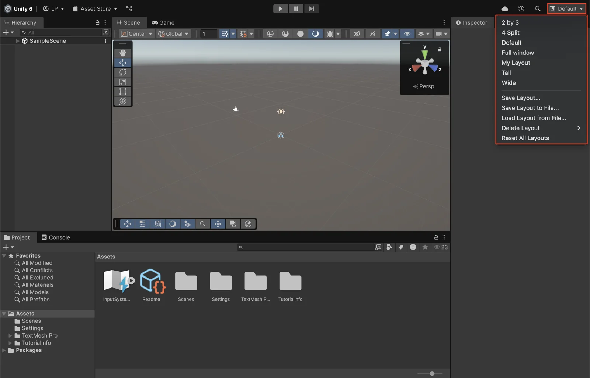
В Hierarchy виден состав открытой сцены, в Scene её редактируют, а Game показывает результат через игровую камеру. Inspector содержит компоненты выбранного объекта и их настройки. В Project находятся ресурсы: модели, изображения, звуки, материалы, сцены и код. Console помогает читать ошибки и сообщения. Эти панели отвечают на разные вопросы: где объект существует, что он делает и какой ресурс использует.
Prefab позволяет сохранить настроенный объект как повторно используемый ресурс. Если в игре двадцать одинаковых дверей, удобно сделать один шаблон с геометрией, коллайдером и скриптом, а затем разместить его экземпляры. Изменение общего шаблона помогает согласованно обновлять объекты; отдельные экземпляры могут иметь свои переопределённые параметры. Сцена при этом содержит их конкретное расположение и связи.
Первый опыт: падающий объект
Для знакомства достаточно нового 3D-проекта без сложных ресурсов. Создайте Plane и Cube, поднимите куб над плоскостью и добавьте кубу Rigidbody. Проверьте, что у обоих объектов есть подходящие коллайдеры. Направьте камеру так, чтобы было видно падение, и нажмите Play. Теперь можно менять массу, параметры материала физики и положение объектов, наблюдая результат.
Если куб проходит сквозь пол, смотрите на коллайдеры и настройки тел. Если его не видно, проверьте положение камеры и вкладку Game. Если объект остаётся висеть, проверьте гравитацию и Is Kinematic. Так мы учимся различать ошибки изображения и ошибки взаимодействия. Для последовательного знакомства с редактором есть официальный курс Unity Essentials.
Следующий шаг: автоматическая дверь
Сделаем небольшой пример для сцены с уже настроенным управляемым персонажем. Перед дверью находится отдельный GameObject с Box Collider и включённым Is Trigger. На этот объект добавляется скрипт ниже. Сама дверь является другим объектом: в ней находится видимая геометрия и коллайдер, который перекрывает проход.
using UnityEngine;
public class OpenDoorOnEnter : MonoBehaviour
{
[SerializeField] private GameObject door;
private bool opened;
private void OnTriggerEnter(Collider other)
{
if (opened || door == null)
return;
if (!other.CompareTag("Player"))
return;
opened = true;
door.SetActive(false);
}
}Сохраните файл как OpenDoorOnEnter.cs и добавьте компонент на объект датчика. Перетащите объект двери в поле Door в Inspector. Коллайдер персонажа, который входит в датчик, должен находиться на объекте с тегом Player. В этой простой конфигурации используйте одного физического игрока с Collider и Rigidbody; у датчика есть Collider с Is Trigger. Слои должны разрешать взаимодействие. Условия вызова события описаны в документации OnTriggerEnter.
Здесь событие проверяет, кто вошёл в область, и отключает дверь целиком, вместе с коллайдером. Переменная opened запрещает повторное срабатывание. Это учебный прототип: дверь исчезает. Чтобы получить анимацию открытия, вместо отключения объекта нужно запустить её, согласовать момент освобождения прохода и добавить звук. Управление персонажем этот скрипт не создаёт.
Если у готового контроллера много дочерних коллайдеров или другая система движения, проверку игрока нужно адаптировать: например, находить компонент персонажа у родителя. Простое копирование скрипта без понимания состава сцены часто и вызывает ощущение, что движок «не работает». Поле Door, тег, коллайдеры и тип физического тела являются частью настройки примера.
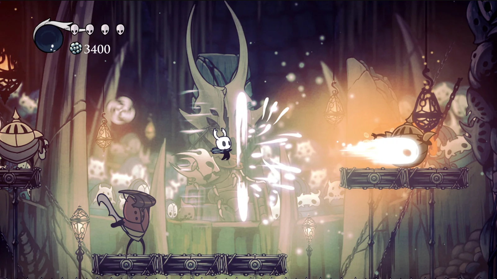
Hollow Knight, Team Cherry, Unity. Точность перемещения, удар, отдача, реакция противника и звук соединяются в коротком действии. На скриншоте можно увидеть результат, но ощущение удара возникает во времени: из паузы, изменения скорости, анимации, частиц и обратной связи. Движок предоставляет средства для этих связей; конкретные длительности и правила настраивает команда. Создание игры в Unity подтверждено официальным разбором проекта.
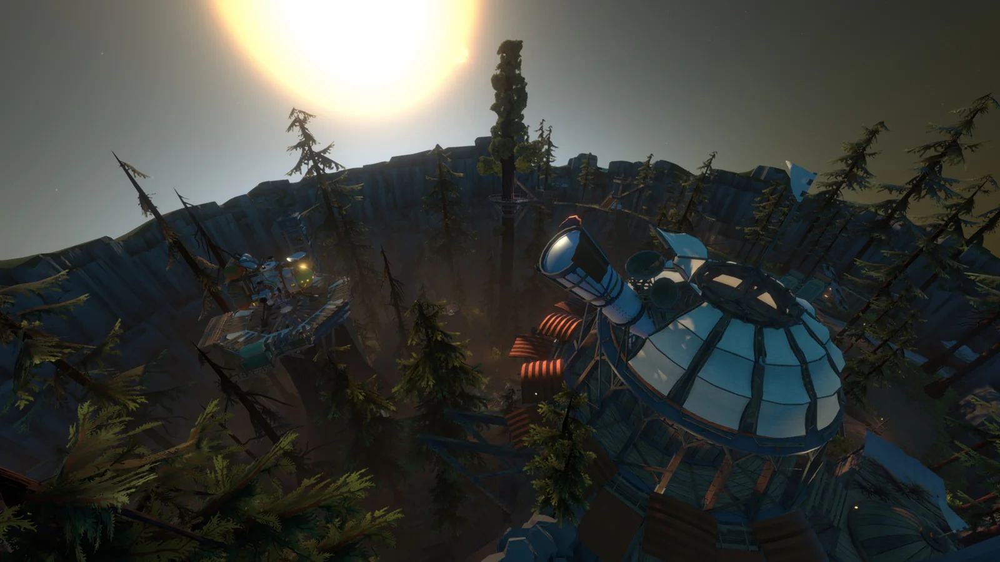
Outer Wilds, Mobius Digital, Unity. Здесь интересно исследовать мир, наблюдать изменения и связывать найденные сведения. Можно обсуждать, как ограниченная информация и движение небесных тел направляют любопытство, не раскрывая сюжетные ответы. Это показывает другую сторону движка: одни и те же инструменты могут поддерживать не только бой, но и исследование. Проект указан в подборке Unity; на официальном канале есть большой разбор художественных решений с Mobius Digital. Видео содержит спойлеры.
Unreal Engine: мир и Blueprints
В Unreal Engine объекты, размещённые в игровом мире, обычно представлены Actor. У них могут быть компоненты: геометрия, камера, звук, форма столкновения. Level содержит размещённые объекты. Blueprint Class позволяет описать повторно используемый тип объекта с компонентами, параметрами и поведением. Экземпляры одного класса можно расставить по уровню.
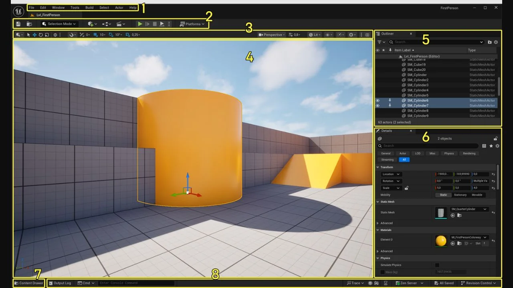
В Viewport редактируют пространство, Outliner показывает объекты уровня, Details содержит настройки выбранного объекта. В Content Browser / Content Drawer находятся ресурсы проекта. Кнопка Play запускает игровой режим. Отдельное окно Blueprint открывает устройство выбранного класса и его логику.
Blueprints являются визуальным программированием: мы собираем правила из узлов и соединений. Одни соединения передают данные, другие задают выполнение действий. Событие запускает цепочку; проверка Branch выбирает ветку по логическому условию; переменная хранит значение. На схеме нужно различать «какой объект передать» и «какое действие выполнить следующим».
Визуальный способ записи не отменяет программирование. Здесь тоже нужно правильно хранить состояние, передавать ссылку на объект и проверять условия. Большая схема без структуры может стать труднее для чтения, чем короткий скрипт. Повторяемые действия выносят в функции, а самостоятельные объекты оформляют в отдельные классы. Для более сложных систем Unreal также использует C++; оба подхода можно сочетать. См. официальное введение в Blueprints.
Первый запускаемый уровень
- Создайте проект из категории Games с шаблоном Third Person и вариантом None, если редактор предлагает варианты. В нём уже есть управляемый персонаж и пространство для проверки.
- Нажмите Play. Проверьте ходьбу, прыжок и камеру, затем остановите запуск. Сначала важно понять исходное поведение шаблона.
- Добавьте на уровень платформу или препятствие, проверьте коллизию и снова пройдите пространство. Измените ширину прохода и высоту ступени: масштаб сразу влияет на движение.
- Создайте Blueprint Actor для двери: добавьте видимую геометрию и Box Collision перед ней. Настройте область на пересечение с персонажем и генерацию overlap-событий.
- Из события Begin Overlap возьмите Other Actor и проверьте, что это персонаж игрока, например через Cast к классу персонажа выбранного шаблона. После успешной проверки используйте Do Once.
- Для простого прототипа выключите видимость геометрии двери и отключите её столкновение через Set Collision Enabled → No Collision. Если изменить только видимость, невидимая дверь может продолжить мешать проходу.
- Запустите сцену, войдите в область и пройдите дальше. Перезапустите игру: в этом примере дверь снова закрыта, потому что сохранение состояния мы ещё не создавали.
Названия элементов шаблона зависят от его версии и выбранного варианта. Сам принцип остаётся одним: событие, проверка участника, защита от повтора и изменение мира. Устройство стартовой сцены показано в документации Third Person Template.
Unreal особенно интересен для работы с пространством и выразительным изображением: материалы, освещение, эффекты Niagara, анимация и постановка камер собираются рядом с игровой логикой. Но сложный рендер требует вычислительных ресурсов. Готовые красивые ассеты не заменяют проверку читаемости уровня, управления и времени кадра.
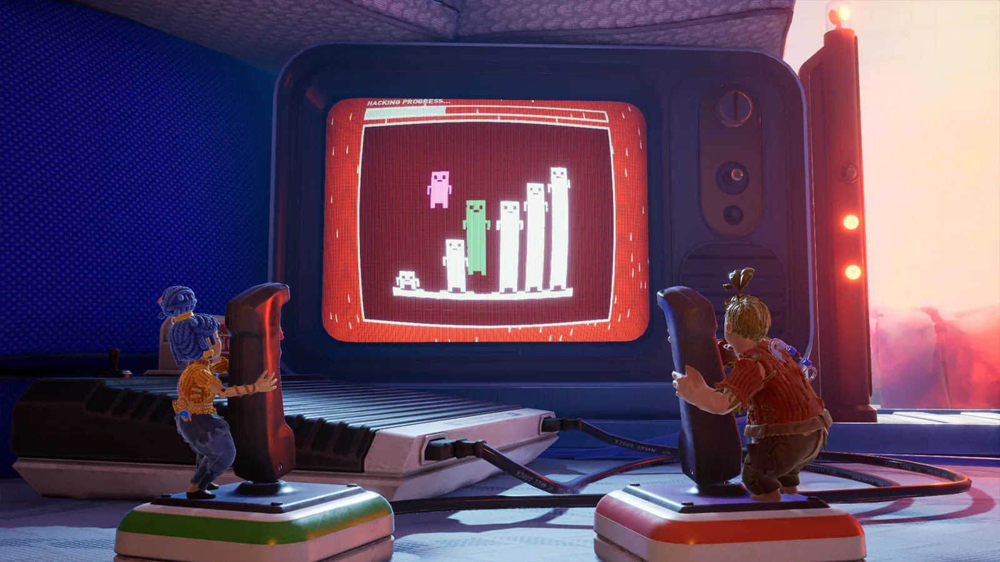
It Takes Two, Hazelight, Unreal Engine. Способности персонажей дополняют друг друга, и продвижение строится на согласованных действиях. Разделённый экран показывает две точки зрения на общую задачу. Для обсуждения можно проследить, какую информацию получает каждый игрок и почему задача требует участия обоих. Связь механик с историей авторы объясняют в интервью Hazelight для Epic Games.
Более поздний пример той же команды, Split Fiction, также строится вокруг кооперации и меняющихся игровых ситуаций. В разборе разработки для Unreal Engine можно посмотреть, как авторы работают с разными мирами и механиками внутри одного проекта. Обсуждая такие игры, полезно различать технологию движка и придуманные командой правила сотрудничества.
Godot: узлы, сцены и сигналы
В Godot проект организован как дерево узлов. У каждого узла есть назначение: Node2D или Node3D задаёт пространственную основу, Sprite2D показывает изображение, Camera3D определяет вид, AudioStreamPlayer воспроизводит звук. Из узлов собирают сцену, сохраняют её отдельным ресурсом и используют внутри других сцен. Персонаж, кнопка меню и целый уровень могут быть сценами разного масштаба.
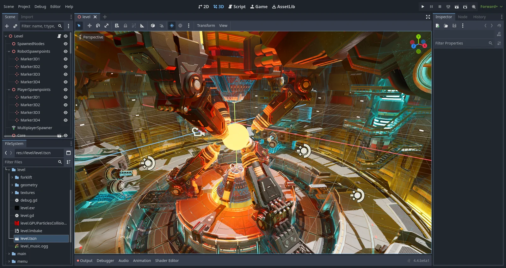
Слева находится дерево текущей сцены и файловая система проекта, в центре рабочая область 2D, 3D или редактор скрипта, справа Inspector выбранного узла. Рабочие области позволяют переходить от структуры к изображению и коду, не меняя сам проект.
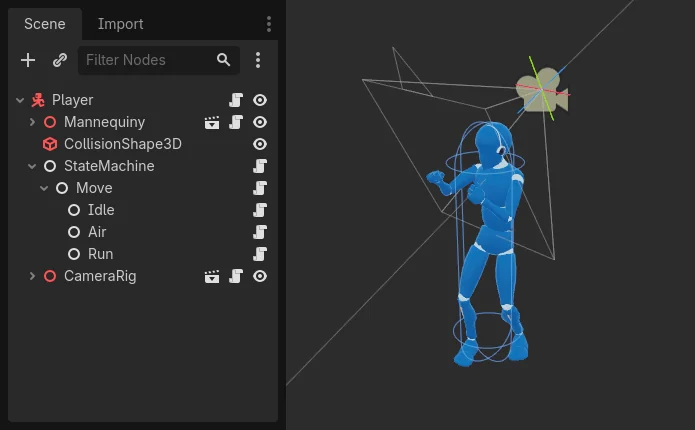
Вложенность помогает разделять ответственность. Например, корневой узел персонажа отвечает за движение, дочерний узел содержит модель, другой дочерний узел задаёт форму столкновения. Поворот модели можно отделить от направления камеры. Один и тот же экземпляр сцены персонажа затем размещают на разных уровнях. Основная модель описана в документации об узлах и сценах.
Сигнал сообщает о событии. Кнопка посылает pressed, область сообщает о входе тела, а собственный узел может отправить сигнал изменения здоровья. Другой узел подписывается и выполняет нужную функцию. Поэтому интерфейсу не обязательно постоянно опрашивать персонажа: достаточно обновиться, когда данные изменились. См. введение в сигналы.
Для логики часто используют GDScript, язык Godot, или C# в соответствующей редакции движка. Похожесть записи GDScript на Python не делает эти языки взаимозаменяемыми. Встроенные типы узлов и методы относятся к Godot. Учебные материалы важно выбирать для той же основной версии движка, что установлена на компьютере.
Как собрать пространство и правило
- Создайте 3D-сцену с корнем Node3D. Добавьте пол: StaticBody3D с CollisionShape3D и видимой геометрией MeshInstance3D. Проверьте размер формы столкновения.
- Персонажа оформите отдельной сценой с корнем CharacterBody3D, дочерней формой CollisionShape3D и видимой моделью. Добавьте камеру в удобную для выбранного вида часть сцены.
- В Project Settings → Input Map создайте действия движения и назначьте клавиши. Одних имён действий недостаточно: скрипт контроллера должен читать ввод и перемещать тело.
- Для первого рабочего контроллера используйте последовательность из официального курса Your first 3D game: там отдельно показаны движение, гравитация, прыжок и взаимодействие.
- Создайте дверь с видимой геометрией и физическим препятствием. Рядом разместите отдельный Area3D с CollisionShape3D. Добавьте корень персонажа в группу player.
- Соедините сигнал body_entered области с обработчиком. В обработчике проверьте группу player и флаг «уже открыто», затем удалите или отключите весь узел двери, включая столкновение. Сохранённую ссылку на дверь нужно заранее назначить в Inspector или получить из дерева сцены.
- Проверьте повторный вход, отсутствие игрока в группе и положение области. После этого можно заменить мгновенное исчезновение анимацией, звуком и подсказкой.
Полный маршрут от создания области игры до результата есть в официальном первом 3D-проекте. Устройство персонажа и настройка действий разобраны в разделе Player scene and input actions. Это позволяет проверить каждый шаг на работающей сцене, а затем перенести приём в свой проект.
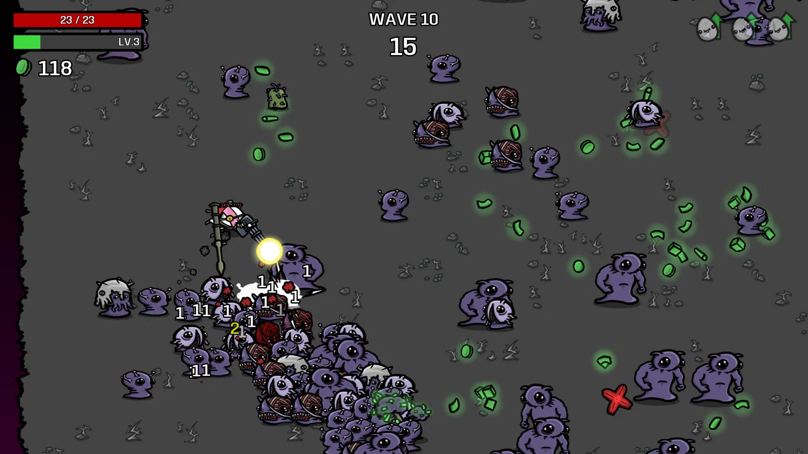
Brotato, Blobfish, Godot. На экране много противников и снарядов, а между волнами игрок меняет сборку персонажа. Здесь интересно сопоставить короткое действие и долгосрочное решение: уклонение работает прямо сейчас, выбор предмета меняет последующие столкновения. Игра показывает, сколько вариантов можно получить из сочетания параметров и ограничений. Официальная страница проекта в Godot Showcase.
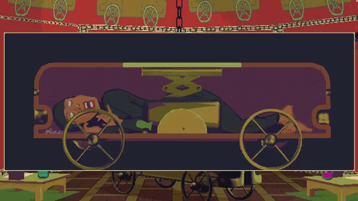
The Case of the Golden Idol, Color Gray Games, Godot. Движок используется для наблюдения, работы с уликами и проверки логических связей. Повествование развивается через понимание сцены игроком. Сравните этот пример с Brotato: графический стиль и способ взаимодействия отличаются, хотя оба проекта используют одну среду. Официальный Godot Showcase.
Эти примеры помогают избежать привязки движка к одному жанру. Godot поддерживает 2D и 3D, Unity используется и для камерных авторских игр, а Unreal подходит не только для фотореалистичных миров. Возможности инструмента и художественное решение проекта нужно рассматривать отдельно.
Другие движки и жанры
Универсальный движок полезен, когда нужно свободно сочетать системы. Жанровая среда может быстрее дать основу конкретной игры. Она предлагает готовую организацию карт, диалогов, боя или повествования, но часть решений придётся принимать в рамках её устройства.
| Среда | С чем удобно знакомиться | О чём помнить |
|---|---|---|
| GameMaker | Двухмерные игры: объекты, комнаты, события, движение, столкновения и логика на GML. | Хороший повод разобраться с событиями и повторно используемыми объектами. Для сложной игры всё равно нужны структура данных и организация поведения. |
| RPG Maker | Карты из тайлов, персонажи, события, диалоги и типовые системы ролевой игры. | Готовые жанровые механизмы ускоряют старт. Необычные системы могут потребовать плагинов или программирования. |
| Ren’Py | Визуальные новеллы: текст, сцены, выбор, переменные, изображения, звук и интерфейс. | В центре находится повествование. Нужно следить за условиями выбора и последствиями, а не только последовательно выводить реплики. |
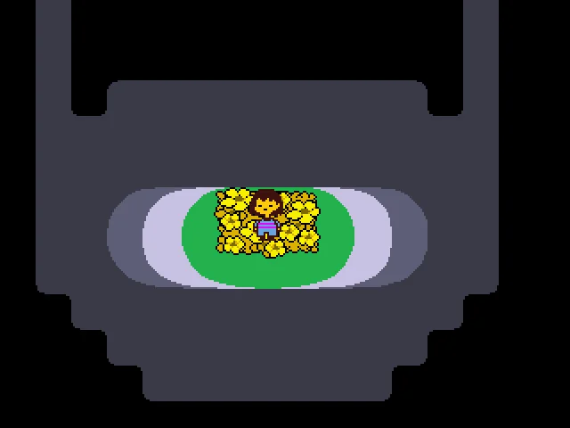
Undertale, Toby Fox, GameMaker. Игра соединяет диалог, выбор действий и эпизоды уклонения от атак. Правило «как поступить с противником» поддерживает тему произведения. Здесь хорошо видно, что выразительность игры определяется и механикой, и текстом, и тем, как она отвечает на решение игрока. Проект указан в официальном каталоге GameMaker.
В визуальной новелле столкновения могут вообще не понадобиться. Но потребуется состояние: какие сведения известны, кому доверяет герой, какие ветви доступны. В тактической игре важнее сетка, порядок ходов и проверка допустимости действия. В гонке центральными становятся управление, сцепление и представление скорости. Поэтому нельзя оценивать движок только по одному эффектному техническому ролику.
Какие движки встречаются в Steam
Снимок данных SteamDB на 21 октября 2026 года. Ниже количество игр с распознанной технологией в разделе Engine общей страницы SteamDB Technologies. Это накопленный каталог, а не только релизы за 2026 год.
| Технология | Количество игр |
|---|---|
| Unity | 66 595 |
| Unreal | 20 849 |
| GameMaker | 6 567 |
| Godot | 5 152 |
| RPGMaker | 4 444 |
| RenPy | 4 328 |
| PyGame | 3 836 |
SteamDB автоматически распознаёт технологии по именам файлов в доступных списках содержимого игр. Покрытие неполное, возможны ошибки. Общая таблица считает игры; отдельные страницы технологий могут включать другие типы приложений. PyGame здесь представлен как в классификации SteamDB, хотя это библиотека, а не редактор наподобие Unity.
Эти числа не измеряют продажи, аудиторию, выручку или долю мирового рынка и не означают число проектов на последней версии движка. Проценты от суммы строк не рассчитываем. По одному снимку нельзя судить о темпах роста. SteamDB является независимым проектом и не связан с Valve. Источник и описание метода.
Для выбора среды полезнее сопоставить требования своего проекта с рабочим процессом инструмента: какое управление нужно, кто будет делать графику, где запустится игра и насколько удобно команде поддерживать её логику. Большое число существующих игр само по себе не отвечает на эти вопросы.
Как проходит работа над игрой
Работу удобно начинать с проверяемого действия: перепрыгнуть препятствие, направить луч, сопоставить две улики, выбрать реплику с последствиями. Для первого прототипа достаточно простых форм. Пока неясно, интересно ли управлять персонажем и понятна ли цель, сложная модель может только замедлить изменения.
Пространство, которое можно проверить
Блокаут, или graybox, это уровень из простых объёмов: пол, стены, платформы, лестницы. На нём проверяют расстояния, маршруты, скорость, видимость цели и положение камеры. Важно пройти пространство самостоятельно: из редакторского вида сверху многие проблемы не видны. Игрок может не заметить нужный проход, застрять у края, принять фон за платформу или повернуть в область, которую автор считал недоступной.
Следующий шаг часто называют вертикальным срезом: небольшой фрагмент, где уже вместе работают ключевые системы и предполагаемое качество оформления. Это может быть одна короткая сцена с началом, препятствием, действием, обратной связью и завершением. Такой фрагмент помогает оценить трудоёмкость будущего проекта лучше, чем большое пространство без взаимодействий.
Модели, материалы и анимация
Ресурсы могут приходить из Blender, графических редакторов и аудиопрограмм. При импорте проверяют единицы измерения, ориентацию осей, точку опоры, масштаб, материалы, скелет и анимации. FBX и glTF/GLB используются в разных цепочках экспорта; поддержку конкретного формата и его возможностей нужно смотреть у выбранного движка и импортёра. Один раз проверенный небольшой объект лучше, чем сразу перенесённая целая сцена с неизвестными настройками.
Материал из Blender не всегда переносится полностью: узлы, процедурные вычисления и рендереры могут отличаться. Часть результата запекают в текстуры, часть материала собирают заново. Geometry Nodes могут подготовить геометрию, но их наличие в исходном файле не означает, что вся система автоматически продолжит вычисляться внутри игры.
Анимация связывается с состоянием. При скорости выше порога включается бег; при отрыве от земли начинается прыжок; окончание атаки разрешает следующее действие. Нужно согласовать видимое движение с физическим телом, иначе персонаж будет скользить по полу или наносить удар до того, как оружие достигло цели. Звук и эффекты также привязывают к осмысленным моментам.
Интерфейс, звук и понятность
Интерфейс показывает данные игрового мира: здоровье, запас энергии, найденные предметы, выбранный ответ. Само значение лучше хранить в игровой системе, а затем отображать его в интерфейсе. Если считать здоровье по тексту надписи, при смене оформления или языка легко сломать правило.
Обратная связь объясняет связь действия с результатом. Нажатие без эффекта, звука и изменения интерфейса трудно отличить от ошибки. Но одновременная вспышка, тряска камеры и громкий звук на каждое действие утомляют. Интенсивность нужно соотносить со значимостью события и предусматривать настройки для чувствительных зрителей. Критически важную информацию полезно передавать несколькими способами, например цветом и формой, изображением и подписью.
Пространственный звук помогает понять, откуда приближается опасность или где находится источник сигнала. Музыка может меняться вместе с состоянием игры. Пауза, меню, проигрыш и перезапуск тоже требуют согласованного поведения: не должно получаться, что открыто меню, а персонаж продолжает получать урон, если правила предполагают остановку.
Сохранение и сетевое взаимодействие
Сохранение переносит выбранное состояние между запусками. Нужно решить, что записывать: позицию, пройденные этапы, содержимое инвентаря, параметры, уже открытые двери. У объектов должны быть устойчивые идентификаторы. Затем нужно восстановить мир в согласованном виде: открытая дверь не должна появиться закрытой с невидимым коллайдером. Нажатие Stop в редакторе само по себе не создаёт такую систему.
Сетевая игра добавляет несколько независимых копий мира и задержку передачи данных. Нужно определить, какая сторона подтверждает попадание, кто имеет право менять состояние и что увидят остальные участники. Простая отправка координат не решает все задачи синхронизации. Для начала полезно отдельно проверить локальную игру на одном устройстве, а затем проектировать сетевое взаимодействие как самостоятельную систему.
Даже без сети тестируйте неожиданный порядок действий: игрок ушёл из области во время диалога, дважды нажал кнопку, открыл меню в момент перехода, загрузил сохранение после изменения сцены. Это помогает увидеть, где правило было описано только для одного удачного случая.
Производительность и сборка
В редакторе есть накладные расходы и инструменты, которых не будет у пользователя. Поэтому проект нужно рано собирать и проверять на целевом устройстве. Смотрите на время кадра, память и загрузки. Профилировщик помогает понять, где тратится время: в логике, физике, обработке объектов или отрисовке. Снижать качество всех материалов сразу без измерения причины обычно малоэффективно.
Частые проблемы возникают из-за слишком большого количества одновременно активных объектов, тяжёлых эффектов прозрачности, сложных динамических источников света и лишних вычислений каждый кадр. Иногда полезно упростить коллайдер, ограничить дальность прорисовки или повторно использовать объекты вместо постоянного создания и удаления. Но оптимизацию выбирают по измеренному узкому месту.
Сборка, build или export, создаёт приложение для выбранной платформы. Нужны подходящие модули, настройки управления, стартовая сцена и включённые ресурсы. У Unity и Godot есть веб-экспорт с ограничениями конкретной конфигурации. Например, документация Godot 4 пока исключает веб-экспорт проектов на C#. Для Unreal распространён отдельный подход Pixel Streaming: приложение работает на удалённом компьютере, а браузер получает видеопоток и передаёт управление. Это требует сервера и соединения; такой поток нельзя приравнять к игре, целиком выполняемой в браузере.
Симуляторы, инсталляции и кино
Для инсталляции тоже нужен мир с состояниями и правилами. Посетитель приближается к экрану, пространство просыпается, несколько людей меняют изображение, затем система возвращается в исходное состояние. Вместо клавиатуры данные могут приходить от камеры, датчика расстояния, MIDI-контроллера или другого приложения. Движок должен получать эти данные через подходящий плагин, протокол или собственный программный модуль: наличие физики не означает автоматическую поддержку любого устройства.
Например, в придуманной интерактивной витрине посетитель управляет потоком объёмных объектов. Движок рассчитывает их поведение и камеру, TouchDesigner может подготавливать данные камеры, а отдельный модуль передаёт события между программами. Это возможная архитектура, а не описание конкретной выставки. Конкретный способ обмена выбирают с учётом задержки, совместимости и стабильности.
У публичного показа есть свои сценарии: никто не взаимодействует, пришли сразу несколько людей, человек ушёл посреди действия, датчик потерял сигнал, компьютер перезапустился. Нужны режим ожидания, понятное приглашение, сброс состояния и восстановление запуска. Эти детали столь же важны, как выразительность изображения.
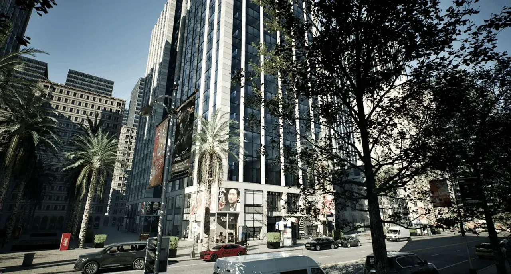
CARLA: движок как основа симулятора. В проекте для исследования автономного вождения создаются дорожные ситуации, участники движения и данные виртуальных сенсоров. Это позволяет повторять сценарии и менять условия. Связь с Unreal Engine и версия на его основе описаны в официальном выпуске CARLA 0.10.0. Реалистичная картинка сама по себе не доказывает точность физической модели: для исследования важны также корректность измерений и воспроизводимость эксперимента.
The Mandalorian: движок в виртуальном производстве. В описанном Epic Games процессе цифровое окружение выводилось на LED-экраны на площадке и менялось с учётом положения камеры. Так создаются перспективно согласованный фон, освещение и отражения в кадре. Это другой способ использования реального времени: пользователь здесь прежде всего съёмочная команда. Разбор производства первого сезона показывает связь Unreal Engine, виртуальных декораций и съёмки.
Для VR важны масштаб, устойчивое время кадра, отслеживание головы и комфорт перемещения. Для музейного экрана важнее понятность без инструкции и работа в течение всего дня. Для игры на домашнем компьютере важны управление, сохранение и возможность пройти проект. Одна технологическая основа получает разные требования в зависимости от того, где и как человек с ней встречается.
Как выбрать среду и продолжить знакомство
Сначала сформулируйте действия и условия проекта: что делает человек, какие объекты существуют, как меняется состояние, какое устройство показывает результат. Затем проверьте самый рискованный фрагмент: удобство движения, подключение датчика, большой поток объектов или доступ через браузер. Выбор движка станет гораздо конкретнее после такого маленького прототипа.
| Среда | Что удобно попробовать первым | На что обратить внимание |
|---|---|---|
| Unity | Компоненты, физический объект, взаимодействие, небольшой 2D- или 3D-уровень. | Организация GameObject, Prefab и C#; выбор рендерного конвейера, платформы и доступных пакетов. |
| Unreal Engine | Готовый управляемый персонаж, пространственная сцена, логика на Blueprints. | Требования к компьютеру, читаемость графов, стоимость выбранных графических возможностей. |
| Godot | Отдельная сцена персонажа, простая 2D-игра, сигналы и интерфейс. | Состав дерева, типы физических узлов, версия документации и ограничения выбранного экспорта. |
| GameMaker, RPG Maker, Ren’Py | Игра с понятным жанровым ядром: 2D-действие, ролевая система или разветвлённая история. | Насколько задуманные правила укладываются в устройство среды и что потребуется для расширения. |
Для работы с Unity можно начать с Unity Essentials: это последовательный официальный маршрут от интерфейса к компонентам, сценам, звуку и сборке. Для Unreal удобно сочетать документацию Third Person Template с введением в Blueprints. Для Godot есть полный первый 3D-проект; начинающим также полезно пройти рекомендованный в нём двухмерный пример.
При просмотре чужих проектов задавайте конкретные вопросы. Что игрок может изменить? Как система подтверждает действие? Что хранится между попытками? Как камера объясняет пространство? Что произойдёт при другом порядке действий? Такие вопросы помогают увидеть работу движка за готовой картинкой и понять, какие именно системы понадобятся в собственном проекте.